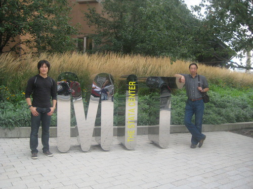

A few days ago I just put my application through to MIT, needless to say it is a very long shot, but you never know . . .
(Uncle Eric and Mom)

(Me and Uncle Eric)
And this is me when I was visiting Boston this past september. I should have walked in to the labs and talked to people :/ . . .